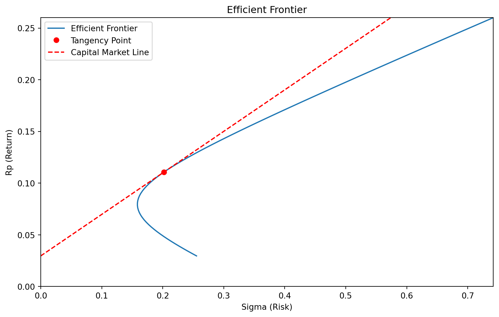
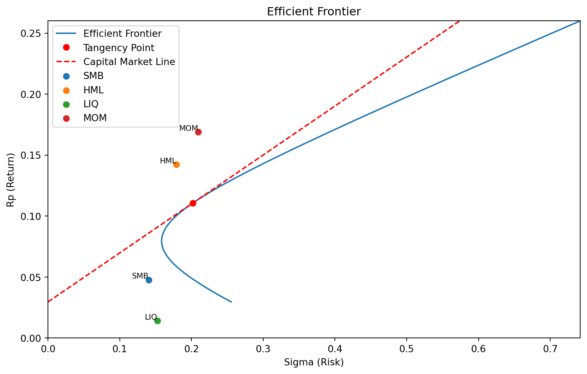

import sec_mkt_line
fig, ax = sec_mkt_line.plot_sec_mkt_lines()4 - Potfolio evaluation, CAPM and factors
In order to understand what factors are, we need to start with the Capital Asset Pricing Model (CAPM) Mossin (1966). This is the original “factor model”, where the only factor is the market index (the collection of all stocks weighted by market capitalization).
The capital asset pricing model
CAPM is defined by the following univariat regression model
\[ \begin{array}{rl} x - r_f = \alpha + \beta_M (r_M - r_f) + \epsilon \end{array} \tag{1}\]
A good way to evaluate the model, is by looking at the estimated \(\hat{\beta}_M\), and compare it with the returns. This is a bit to complicated to put in a document like this, so it has been programmed in the local module sec_mkt_line included in this repository. This will plot the returns and betas for the stocks at Euronext Oslo Stock Exchane since 2016, for various filtrations of stocks. The stocks are filtered on average market share in the period.
In theory, individual stocks should lie along a line that starts at the risk-free interest rate, ( r_f ), and passes through the point representing the market portfolio (for example, OSEBX). The market portfolio has a beta of ( _M = 1 ) by definition, since it represents the entire market and therefore has the same systematic risk as itself.
This line — shown in red in the figures — is called the Security Market Line (SML). It represents the expected relationship between a stock’s systematic risk (β) and its expected return according to the Capital Asset Pricing Model (CAPM).
If a stock consistently yields returns above the SML, investors will be attracted to it. The resulting increase in demand drives its price up and its expected return down, until it moves back toward the SML. Conversely, if a stock yields returns below the SML, investors will sell it, lowering the price and raising the expected return, again moving it closer to the SML.
That is the theoretical prediction. In reality, however, the data tell a different story. As shown in the figures. The blue line in these plots represents the empirical regression line that best fit observed average returns and estimated betas. This empirical line typically lies above the SML and often has a flatter slope. When smaller stocks are included, the slope even turn negative. Only when the sample is restricted to the largest stocks does the relationship resemble the SML.
This discrepancy indicates that the CAPM leaves something unexplained. In the early 1990s, researchers proposed that this missing component could be additional sources of systematic risk — what we now call factors.
Construction of Factors
Factors are portfolios constructed based on specific characteristics of assets. For example, Fama and French proposed factors based on company valuation (over- or under-valuation) and company size.
A standard, simplified method for constructing a factor portfolio involves creating a long position in the third of assets with the strongest characteristic (e.g., the most undervalued) and a short position in the third with the weakest. For instance, the HML (High Minus Low) factor by Fama and French takes a long position in the top third of companies with the highest market-to-book value and shorts the bottom third with the lowest.
This results in a portfolio with zero net cost because the long and short positions offset each other. Hence, there’s no need to subtract the risk-free rate when calculating returns for factor portfolios.
In Titlon, there are four factors: SMB, HML, LIQ, and MOM, alongside the market factor (the market index).
- SMB (Small Minus Big): The return of small companies minus the return of large companies.
- HML (High Minus Low): The return of companies with high market-to-book ratios compared to those with low ratios.
- LIQ (Liquidity): The return of the most liquid companies minus that of the least liquid.
- MOM (Momentum): The return of companies with high momentum minus those with high reversal tendencies.
Factor Model
The main purpose of factors is to be used in regression analysis, like the following:
\[ \begin{array}{rl} x - r_f = \alpha + \beta_M (r_M - r_f) \\ +\beta_{SMB} \cdot SMB \\ +\beta_{HML} \cdot HML \\ +\beta_{LIQ} \cdot LIQ \\ +\beta_{MOM} \cdot MOM \\ + \epsilon \\ \end{array} \]
This is a multifactor model. If we only include the market factor, the model reduces to the well-known CAPM (Capital Asset Pricing Model). Adding the additional factors results in a more comprehensive factor model.
Factors in Portfolio Evaluation
Numerous factors have been proposed in the literature. However, many are believed to be the result of data mining, so it’s common practice to use only the most established ones, like those mentioned above, when evaluating portfolio performance.
The estimated \(\alpha\) from the factor model is the most widely recognized measure of risk-adjusted return. A positive \(\alpha\) indicates that a portion of the excess return of \(x - r_f\) cannot be explained by exposure to any of the factors, including the market factor. This implies that the portfolio has delivered some form of risk-free excess return.
As in any regression, you can compute the standard error and p-value of the estimated \(\alpha\). This is crucial because, if the \(\alpha\) is not statistically significant, we cannot confidently conclude that it is different from zero. Therefore, to claim that an asset or portfolio has truly outperformed the market, its multifactor \(\alpha\) should be both positive and statistically significant.
Historical Context
This framework is the standard method for determining whether a portfolio manager has genuinely been skilled or simply benefited from luck or factor exposures.
The field of finance has, in many ways, been driven by the need to explain portfolio managers’ overperformance. In the early 20th century, some managers appeared to consistently outperform the market. The development of CAPM revealed that this was often due to selecting stocks with high market risk rather than genuine skill. Most of these managers did not generate CAPM alpha.
For investors seeking higher returns by taking on more market risk, simply buying more shares (increasing exposure to the market) is typically more cost-effective than picking the riskiest stocks. The development of CAPM helped investors make more informed choices.
Similarly, the introduction of factor models showed that some managers were merely betting on small-cap stocks or undervalued companies to generate excess returns. When accounting for these factors, much of the supposed excess return often disappears.
Challenge 1: - Download stock data from Titlon for a single stock. - Perform a multifactor regression model using the downloaded data. - Analyze the significance of the alpha: check whether it is statistically significant, and interpret its direction (positive or negative). - Provide commentary on what the result implies in terms of the stock’s performance relative to the factors.
Challenge 2: - Download factor data from Titlon and plot the performance of these factors alongside the optimal portfolio from the previous chapter. - Add each factor as a data point on the chart, allowing comparison between the factors and the optimal portfolio as well as the portfolio frontier. - Use the following SQL query in the Titlon script to retrieve the factor data:
sql SELECT [SMB],[HML],[LIQ],[MOM] FROM [OSE].[dbo].[factors] WHERE YEAR([Date]) >= 2016- Plot the performance and visually assess how each factor performs relative to the optimal portfolio.
Answer:
In the Titlon database, the equity table under the OSE tab all ready contains what we need to solve this. Let us therefore just load the data from lecture 3, and reduce it to weekly data for the variables we need:
import pandas as pd
# reads the data
df_stocks = pd.read_pickle('data/stocks.df')
# reducding the sample by foccusing on a few stocks of
# interest
df_stocks = (df_stocks[df_stocks['Symbol']
.isin(['EQNR','NHY','TEL','YAR'])])
# we capture the ISIN-ticker combinations for later
# use, to associate stocks with tickers
# We need to use the ISIN in what's follows,
# because ticker is not a reliable identifier
df_isin_symbol = (
df_stocks[['ISIN','Symbol']].drop_duplicates()
)
# choosing relevant columns
df_stocks = df_stocks[['Symbol', 'Date', 'lnDeltaP',
'lnDeltaOSEBX', 'SMB', 'HML',
'LIQ', 'MOM', 'NOWA_DayLnrate']]
# defines the indicies
df_stocks['Date'] = pd.to_datetime(df_stocks['Date'])
df_stocks = df_stocks.set_index(['Symbol', 'Date'])
# making sure the index is unique and remove nans
df_stocks = df_stocks[~df_stocks.index.duplicated(keep='first')]
df_stocks = df_stocks.dropna(subset=['SMB'])
# Define excess return of stocks and market index
df_stocks['lnDeltaP_rf'] = (df_stocks['lnDeltaP']
- df_stocks['NOWA_DayLnrate'])
df_stocks['lnDeltaOSEBX_rf'] = (df_stocks['lnDeltaOSEBX']
- df_stocks['NOWA_DayLnrate'])
# Creating weekly observations
df_stocks_w = (
df_stocks.groupby('Symbol')
.resample('W', level='Date').sum()
)
df_stocks_w| lnDeltaP | lnDeltaOSEBX | SMB | HML | LIQ | MOM | NOWA_DayLnrate | lnDeltaP_rf | lnDeltaOSEBX_rf | ||
|---|---|---|---|---|---|---|---|---|---|---|
| Symbol | Date | |||||||||
| EQNR | 2016-01-10 | -0.118288 | -0.079272 | 0.040139 | -0.038205 | 0.065538 | 0.039485 | 0.000165 | -0.118453 | -0.079437 |
| 2016-01-17 | -0.060966 | -0.051140 | -0.004794 | -0.053537 | 0.044127 | 0.013392 | 0.000164 | -0.061130 | -0.051304 | |
| 2016-01-24 | 0.060966 | 0.031203 | 0.016701 | 0.025072 | -0.006152 | -0.014409 | 0.000163 | 0.060803 | 0.031040 | |
| 2016-01-31 | 0.074498 | 0.014923 | 0.002747 | -0.001928 | -0.017278 | -0.024070 | 0.000163 | 0.074335 | 0.014759 | |
| 2016-02-07 | 0.027490 | -0.000335 | -0.008014 | -0.029920 | 0.001621 | -0.008874 | 0.000163 | 0.027327 | -0.000498 | |
| ... | ... | ... | ... | ... | ... | ... | ... | ... | ... | ... |
| YAR | 2025-09-21 | -0.022657 | -0.005436 | -0.000202 | 0.000000 | -0.009784 | 0.030530 | 0.000914 | -0.023571 | -0.006350 |
| 2025-09-28 | 0.023466 | 0.010145 | 0.012169 | 0.000000 | 0.010290 | -0.015301 | 0.000872 | 0.022595 | 0.009273 | |
| 2025-10-05 | -0.007852 | -0.001879 | 0.010233 | 0.000000 | -0.015183 | 0.004564 | 0.000872 | -0.008723 | -0.002750 | |
| 2025-10-12 | 0.018581 | -0.005105 | -0.009795 | 0.000000 | 0.033613 | 0.000467 | 0.000872 | 0.017710 | -0.005977 | |
| 2025-10-19 | 0.020597 | -0.004243 | 0.005420 | 0.000000 | 0.023008 | 0.000888 | 0.000697 | 0.019900 | -0.004940 |
2044 rows × 9 columns
Running the regression for Equinor
import statsmodels.api as sm
# Filter the DataFrame for Symbol = 'EQNR'
df_reg = df_stocks_w.loc['EQNR']
# Define the independent variables (features) and
# dependent variable (target)
X = df_reg[['lnDeltaOSEBX_rf',
'SMB', 'HML', 'LIQ', 'MOM']]
y = df_reg['lnDeltaP_rf']
# Add a constant to the independent variables
# for the intercept
X = sm.add_constant(X)
# Perform the regression
model = sm.OLS(y, X).fit()
# Display the summary of the regression
print(model.summary()) OLS Regression Results
==============================================================================
Dep. Variable: lnDeltaP_rf R-squared: 0.590
Model: OLS Adj. R-squared: 0.586
Method: Least Squares F-statistic: 145.2
Date: Wed, 29 Oct 2025 Prob (F-statistic): 2.64e-95
Time: 11:44:17 Log-Likelihood: 1161.6
No. Observations: 511 AIC: -2311.
Df Residuals: 505 BIC: -2286.
Df Model: 5
Covariance Type: nonrobust
===================================================================================
coef std err t P>|t| [0.025 0.975]
-----------------------------------------------------------------------------------
const -4.217e-05 0.001 -0.037 0.970 -0.002 0.002
lnDeltaOSEBX_rf 1.3564 0.053 25.373 0.000 1.251 1.461
SMB 0.3725 0.058 6.424 0.000 0.259 0.486
HML -0.0352 0.045 -0.780 0.436 -0.124 0.053
LIQ -0.0773 0.053 -1.447 0.148 -0.182 0.028
MOM -0.0912 0.039 -2.320 0.021 -0.168 -0.014
==============================================================================
Omnibus: 15.996 Durbin-Watson: 1.859
Prob(Omnibus): 0.000 Jarque-Bera (JB): 31.370
Skew: 0.132 Prob(JB): 1.54e-07
Kurtosis: 4.185 Cond. No. 53.7
==============================================================================
Notes:
[1] Standard Errors assume that the covariance matrix of the errors is correctly specified.Conclusion, there has been no significant excess return since 2016 for Equinor.
First, let us just rerun the last few cells of the previous chapter, in order to have the previous graph in the memory. That can is done with a custom function calc_notebook in the module functions,pyin this directory. d contains the variable from those calculations.
import functions
d = functions.calc_notebook("3-lecture_optport.ipynb",
["read_pickle","get_matrix",
"cov_matrix", "A =",
"portfolio_front", "ax.plot"])
locals().update(d)Hence the optimal portfolio in this case is
Also, we need data on the factors. We could use the data from the equity table, loaded in lecture 3. However, we want one factor observation each date, not one for each stock. Downloading the factorsmodel from Titlon is therefore more convenient. We get this by pasting the script from Titlon below, or you can just paste the username and password if you want.
If you have all ready run this, you do not need to rerun it, since the data is stored.
import pandas as pd
#Query script for MySQL client
import pymysql
import os
con = pymysql.connect(host='titlon.uit.no',
user = "esi000@uit.no",
password = "6jG4Tw1m5YJ&HBMW2EbKz",
database='OSE')
crsr=con.cursor()
crsr.execute("SET SESSION MAX_EXECUTION_TIME=60000;")
crsr.execute("""
SELECT *
FROM `OSE`.`factors`
WHERE year(`Date`) >= 2016
ORDER BY `Date`
""")
r=crsr.fetchall()
df=pd.DataFrame(list(r),
columns=[i[0] for i in crsr.description])
df
#YOU NEED TO BE CONNECTED TO YOUR INSTITUTION VIA VPN,
# OR BE AT THE INSTITUTION, FOR THIS CODE TO WORK
os.makedirs('data', exist_ok=True)
pd.to_pickle(df,'data/factors.df')We then loade the saved file and calculate the means and standard errors, after reducing the frequency from daily to weekly.
import pandas as pd
df = pd.read_pickle('data/factors.df')
df['Date'] = pd.to_datetime(df['Date'])
df = df.set_index('Date')
df_weekly = df.resample('W').sum()
df_weekly = df_weekly[['SMB', 'HML',
'LIQ', 'MOM']].dropna()
df = df[['SMB', 'HML', 'LIQ', 'MOM']].dropna()
means = df_weekly.mean()*52
std = df_weekly.std()*52**0.5
print(std)
print(means)
df_weeklySMB 0.140437
HML 0.179257
LIQ 0.152690
MOM 0.209637
dtype: float64
SMB 0.047721
HML 0.142255
LIQ 0.014306
MOM 0.168830
dtype: float64| SMB | HML | LIQ | MOM | |
|---|---|---|---|---|
| Date | ||||
| 2016-01-10 | 0.040139 | -0.038205 | 0.065538 | 0.039485 |
| 2016-01-17 | -0.004794 | -0.053537 | 0.044127 | 0.013392 |
| 2016-01-24 | 0.016701 | 0.025072 | -0.006152 | -0.014409 |
| 2016-01-31 | 0.002747 | -0.001928 | -0.017278 | -0.024070 |
| 2016-02-07 | -0.008014 | -0.029920 | 0.001621 | -0.008874 |
| ... | ... | ... | ... | ... |
| 2025-10-05 | 0.010233 | 0.000000 | -0.015183 | 0.004564 |
| 2025-10-12 | -0.009795 | 0.000000 | 0.033613 | 0.000467 |
| 2025-10-19 | 0.004841 | 0.000000 | 0.032806 | 0.003401 |
| 2025-10-26 | -0.035190 | 0.000000 | -0.032422 | -0.002456 |
| 2025-11-02 | 0.000000 | 0.000000 | 0.000000 | 0.000000 |
513 rows × 4 columns
We can then plot the factors in the existing porfolio frontier
for series in means.index:
ax.scatter(std[series], means[series],
label=series)
ax.text(std[series], means[series], series,
fontsize=8, ha='right', va='bottom')
ax.legend()
fig
Can you construct the optimal portfolio of the stocks and the factors?
Literature
Lintner, John. 1965. “The Valuation of Risk Assets and the Selection of Risky Investments in Stock Portfolios and Capital Budgets.” The Review of Economics and Statistics 47 (1): 13–37. https://doi.org/10.2307/1924119.
Mossin, Jan. 1966. “Equilibrium in a Capital Asset Market.” Econometrica 34 (4): 768–83. https://doi.org/10.2307/1910098.
Sharpe, William F. 1964. “Capital Asset Prices: A Theory of Market Equilibrium Under Conditions of Risk.” The Journal of Finance 19 (3): 425–42. https://doi.org/10.2307/2977928.